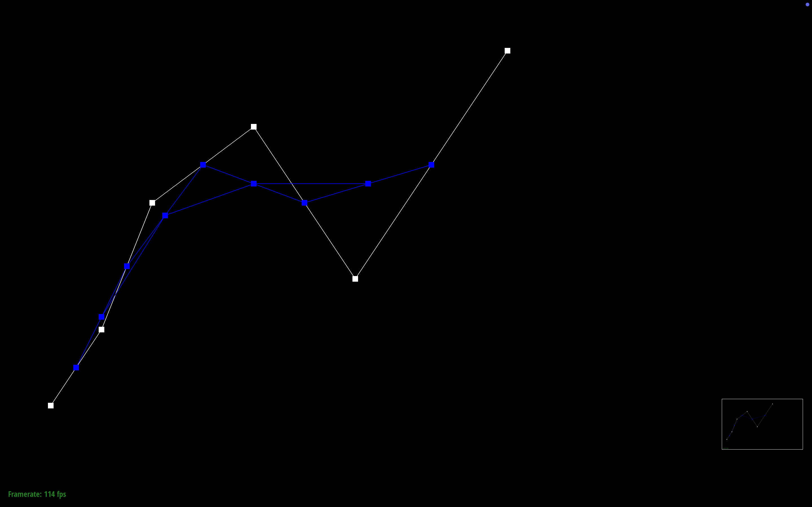
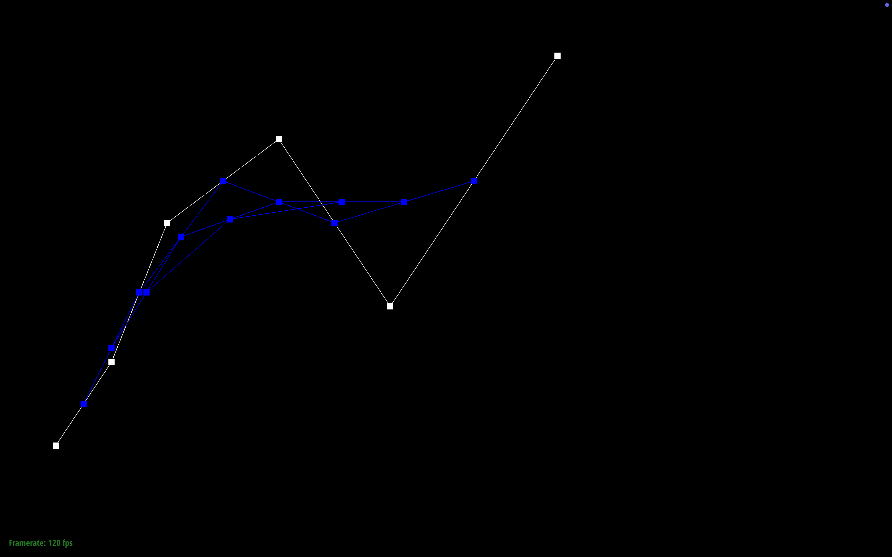
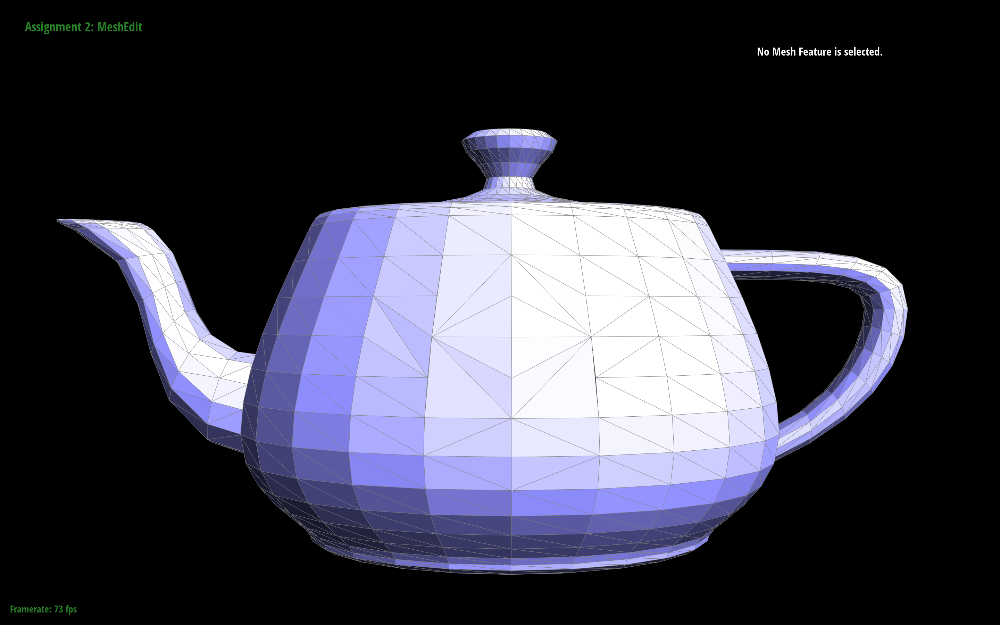
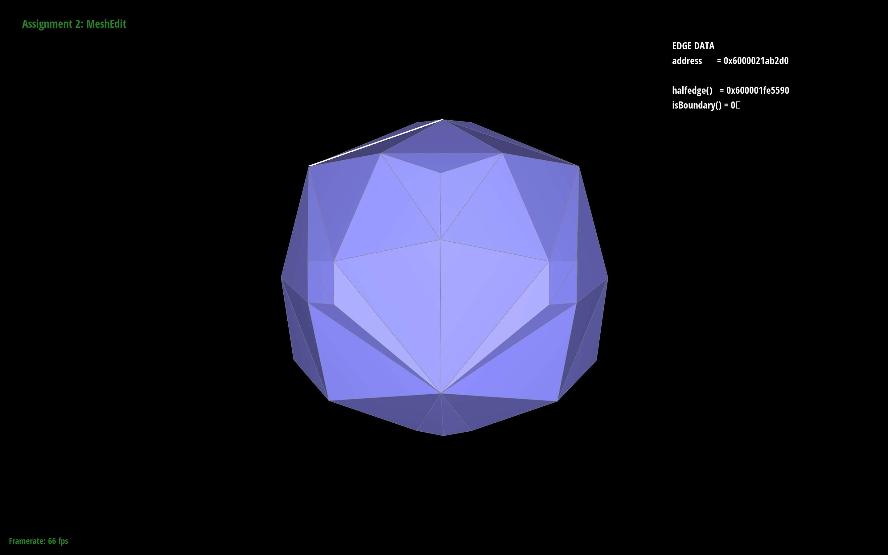

Give a high-level overview of what you implemented in this homework. Think about what you've built as a whole. Share your thoughts on what interesting things you've learned from completing the homework.
In this homework, I've learned how to create Bezier curves by linearly interpolating many times. This then extended to making many bezier curves in order to connect them
and form a bezier surface who's point is captured by the u parameter on the horizontal bezier curves and the v parameter on the vertical bezier curve. This first section overall
gives a good introduction to what we want to do which is creating smooth surfaces in both 2D and 3D. Section 2 gets more into modeling 3d objects and how to
manipulate them, make them smoother, and make them look better. To do this, we first start by implementing smooth shading by calculating area weighted normals at given
vertices. After, we got into the heart of this assignment which is dealing with the halfedge structures and how to manipulate them (flipping and splitting)
in order to do loop subdivision which is a tool used to create smooth C2 continous surfaces. This assignment as a whole made me appreciate the power of loop subdivision
as it can create smooth and dramatically transform objects through seemingly easy opearations such as splititng and flipping edges. It has also made me wary and almost in awe of halfedges
as forgetting to link a pointer or linking the wrong pointer can have catastrophic conssequences when it comes to the smoothing out of objects.
Section I: Bezier Curves and Surfaces
Part 1: Bezier curves with 1D de Casteljau subdivision
Briefly explain de Casteljau’s algorithm and how you implemented it in order to evaluate Bezier curves.
De Casteljau's algoritm is a recursive algorithm that given N control points or intermediate points, calculates and returns N-1 linearly inerpolated intermediate points
given a pararmeter t and a pair of sequential points (i and i+1). In my implemenation, I used a for loop to calculate the N-1 intermediate points and added each intermediate point
into my result array so that they could be plotted. This then continues until the number of points is 2 which means that we will only do one linear interpolation to
get our final point f(t) which is actually on the curve.
Step by step evaluation of Bezier curve with 6 control points
Level 1 evaluation

Level 2 evaluation

Level 3 evaluation
Level 4 evaluation
Level 5 evaluation
Level 5 evaluation with Bezier Curve
Bezier curve with different t parameter
A Bezier curve with a t parameter greater than 0.5
Part 2: Bezier surfaces with separable 1D de Casteljau
Briefly explain how de Casteljau algorithm extends to Bezier surfaces and how you implemented it in order to evaluate Bezier surfaces.
We can extend the de Casteljau algorithm to Bezier surfaces by extending our view of Bezier curves to 3D. For example, on a 3D grid, we can make
many parallel Bezier curves and solve them at some parameter u. Then we can take all these f(u) points on our Bezier curves and interpolate that for
another parameter such as v. Doing that for all u and v, we get a Bezier surface! In my implementation, I compile all the points for each row and compute the
Bezier curve for that row at some parameter u. Then taking the final point f(u) from all the row Bezier curves, I use them as control points and compute
a Bezier curve at some parameter v.
Is anyone thirsty?.
An image of a Bezier teapot
Section II: Triangle Meshes and Half-Edge Data Structure
Part 3: Area-weighted vertex normals
Briefly explain how you implemented the area-weighted vertex normals.
To implement the area-weighted vertex normals, I recorded my initial vertex that my halfedge started at and then to find the normal each face,
I computed the cross product of two edges on the face. I computed these edges by first finding the vertices through the next pointers and
finding the vertices correspoding to the edges. Then after I computed the normal and pushed it back into my vector of Vector3Ds, I did halfedge-->next()->next()->twin()
to get to the next face and repeated the process until I processed all the normals corresponding to my starting vertex. Then I added each
vector within my vector list and then did a vector scalar division with the normalized vector to get my final area-weighted vertex normal.
Show screenshots of dae/teapot.dae (not .bez) comparing teapot shading with and without vertex normals. Use Q to toggle default flat shading and Phong shading.
Is anyone thirsty? *he said smoothly*
An image of a Smooth Bezier teapot
Part 4: Edge flip
Briefly explain how you implemented the edge flip operation and describe any interesting implementation / debugging tricks you have used.
To implement edge flipping, I simply started by drawing out a simple before and after of an edge flip operation. I then listed out every half edge, vertice,
edge, and face of the mesh to later reassign them after an edge flip operation. Then according to my post edge flip operation drawing, I assigned
every pointer correctly, making sure to be very thorough and reassign pointers even if they didn't change for clarity sake.
A flipping bezier pot.

A Bezier pot with some edge flips performed onto it.
Write about your eventful debugging journey, if you have experienced one.
Debugging was somewhat annoying as my first before and after drawings were not consistent as I was unsure how to rename each halfedge after
reassignment so I most likely made some winding order error or trivial mistake since my implementation was not flipping edges at all. I then looked
towards the debugging advice for help and found the Resources and Notes section to be a life saver, especially the guide on how to implement edge flips
as it was fairly straightforward and even gave the before and after drawings so I also drew them and followed it to a T.
Part 5: Edge split
Briefly explain how you implemented the edge split operation and describe any interesting implementation / debugging tricks you have used.
Implementing edge split was fairly similar to implementing edge flip as once again, I recorded all the halfedges, faces, edges, and vertices before
the edge split operation happened. I also made use of a before and after drawing that I also once again followed to a T. I also created the necessary
new halfedges, midpoint, edges, and new faces in order to perform edge split. Then from there, it was a lot of careful pointer reassignment in accordance
to my after picture. It also helped to structure my code in terms of 1. Recording before structures, 2. Making new midpoint, 3. Making new halfedges and other structures,
and 4. Pointer Reassignment.
Show screenshots of a mesh before and after some edge splits.
Before Teapot
After Teapot with edge splits
Show screenshots of a mesh before and after a combination of both edge splits and edge flips.
Before Teapot
After Teapot with various edge split and edge flips
Write about your eventful debugging journey, if you have experienced one.
Thankfully, debugging was this part was pretty easy thanks to what I learned from implementing edge flips.
Part 6: Loop subdivision for mesh upsampling
Briefly explain how you implemented the loop subdivision and describe any interesting implementation / debugging tricks you have used.
To implement loop subdivision, I first updated the positions of old vertices, storing them in the newPosition variable and also made sure to mark
these vertices as old so I could later use it to flip edges. Secondly I iterated through all edges, computing the positions of the new vertices,
also storing them in newPosition and setting the edges as old. Next I split every old edge in the mesh, making sure not to
split any new edges created by splitting operations. I also update the position of the resulting midpoint vertex.
Next I flipped edges containing an old vertice connected to a new vertice. Finally, I updated all vertice positions to the
new positions I computed early and stroed in newPosition. I did not have any interesting implementaion or debugging tricks besides
just being very careful and reading up on other issues people ran into on ED.
Take some notes, as well as some screenshots, of your observations on how meshes behave after loop subdivision.
What happens to sharp corners and edges?
It was very cool to see the torus mesh go from a sharp blocky ring to a very smooth and circular ring. After each
loop subdivision, the sharp corners and edges start to become more smooth and less pointy. We also see the hole
in the torus ring get a lot bigger, especially on the first subdivision iteration as the vertex positions are
being recalculated to smoothen the surface.
Pictured below is the progression of a Torus ring being smoothed out
Torus mesh with no loop subdivision.
Torus mesh with one level of loop subdivision.
Torus mesh with two levels of loop subdivision.
Torus mesh with three level of loop subdivision.
Can you reduce this effect by pre-splitting some edges?
Yes. As you can see below, the more edges are a split, the more resistant they are to the smoothing
of loop subdivision. As a comparison I split one of the planes a lot, the other not so much, and left
everything else unsplit. We can then see the difference very easily as the plane with a lot of splits
retains its plane-like surface. The plane that was split less smoothened out but it is still a little
flat and of course the edges we didn't split fully smoothened out.
Pictured below is the progression of a Torus ring with presplit edges being smoothed out
Presplit Torus mesh with no loop subdivision.
Presplit Torus mesh with one level of loop subdivision.
Presplit Torus mesh with two levels of loop subdivision.
Presplit Torus mesh with three level of loop subdivision.
Load dae/cube.dae. Perform several iterations of loop subdivision on the cube.
Notice that the cube becomes slightly asymmetric after repeated subdivisions.
Loop subdivision on a cube
Cube with no loop subdivision
Cube with one level of loop subdivision
Cube with two levels of loop subdivision
Cube with three levels of loop subdivision
Cube with four levels of loop subdivision
Cube with five levels of loop subdivision
Can you pre-process the cube with edge flips and splits so that the cube subdivides symmetrically?
Document these effects and explain why they occur. Also explain how your pre-processing helps alleviate the effects.
Yes you can pre-process the cube so it becomes more symmetric. In all of the images below, the cube before loop subdivision
has all or almost all of its edges preprocessed. Comparing the pictures to the ones above we can see clear differences
in the rate that the cube smoothens out. These effects occur because the topology of the cube isn't symmetric. This means
that there may be rotational inconsistencies when performing loop subdivision that makes some edges protrude out. By
pre-processing the edges, we are making the topology consistent so there are no rotational inconsistencies.
Loop subdivision on a preprocessed cube

Preprocessed cube mesh with one level of loop subdivision.
Preprocessed cube mesh with two levels of loop subdivision.
Preprocessed cube mesh with three level of loop subdivision.